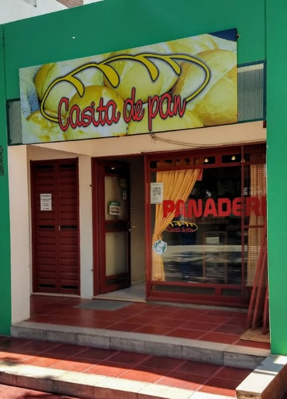
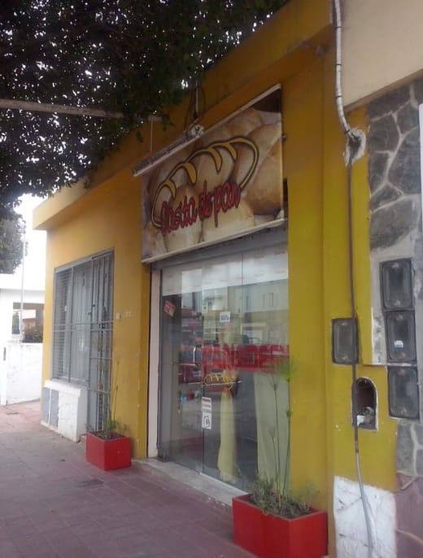

CASITA DE PAN

Casita de Pan es una Panadería/Confitería dedicada a la producción y venta de productos artesanales. Fue fundada por Ramón Natalio Luque y su esposa, Teresita Ignacia Luque. Inició su actividad en el mes de abril del año 1998, que desde aquel entonces ha crecido junto con la familia, fruto del esfuerzo de años tras años. Al día de hoy, contamos con dos sucursales ubicadas en Barrio Jardín, zona sur de la Capital Cordobesa.
